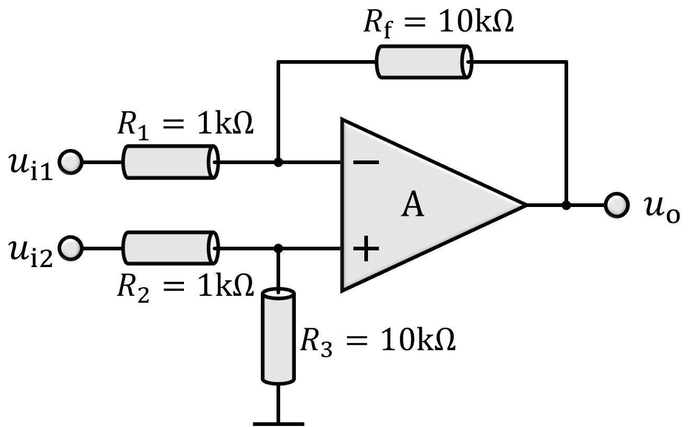
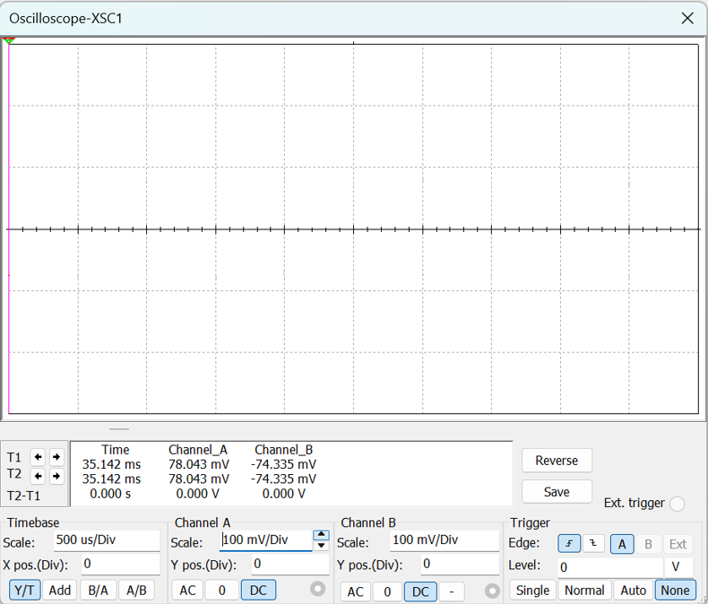
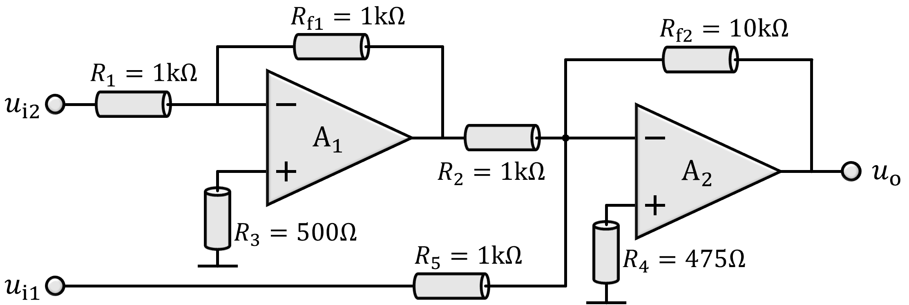
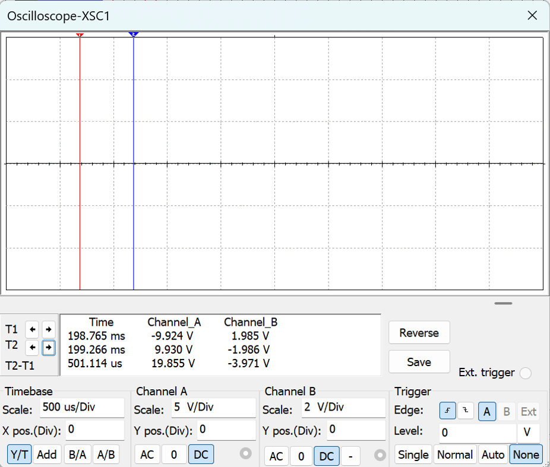

减法放大电路
暂停演示
1. 常用减法电路：由反相比例放大电路和同相比例放大电路构成。
关闭
演示
\(u_\mathrm{o}=\dfrac{R_\mathrm{f}}{R_1}(u_\mathrm{i2}-u_\mathrm{i1})\)

低共模抑制比运放 \(\mathrm{CMRR}=20\ \mathrm{dB}\)
高共模抑制比运放 \(\mathrm{CMRR}=100\ \mathrm{dB}\)

共模输入信号\(u_\mathrm{COM}=100\mathrm{mV}\)
输出信号\(u_\mathrm{op}=100\mathrm{mV}\)
2. 改进减法电路：采用两个反相比例放大器求和实现。
打开
演示

低共模抑制比运放 \(\mathrm{CMRR}=20\ \mathrm{dB}\)时输出电压波形

差分输入信号\(u_\mathrm{i}=1\mathrm{V}\)
改进电路输出信号\(u_\mathrm{op}=10\mathrm{V}\)